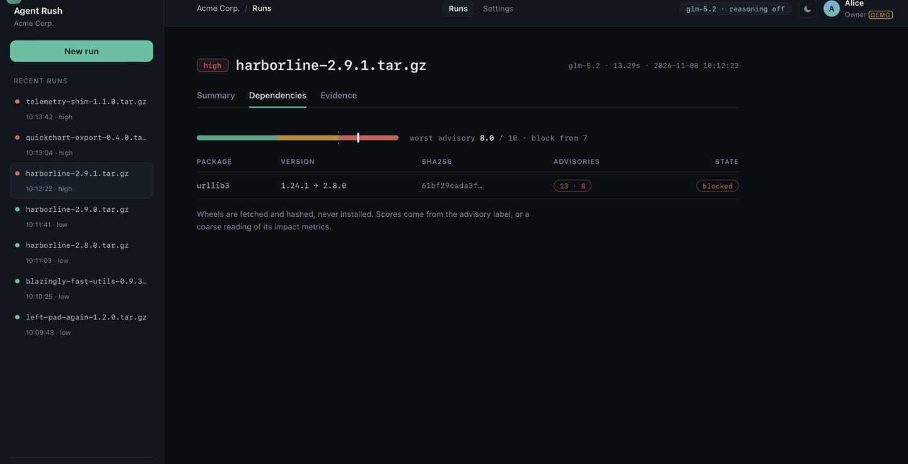

Quarantine installs an untrusted package inside a hardened container, imports it, and resolves its dependency tree — then returns a verdict backed by evidence the package cannot write to. The model may summarise that evidence; it may not invent it.
Build hook, first import, dependency resolve — each in its own container on a Vultr VM.
Egress proxy log, filesystem diff, process result. None of them is written by the sandboxed process.
Rules set the risk floor. A model claim citing a source that is not in this run is dropped.

glm-5.2 · reasoning off · 96 tests · MIT